Lec2 Image Formation#
Camera and lens#
首先让我们来设计一个相机。
假如直接在物体面前放一个底片，显然不能得到较好的图像，因为实物与像平面上的点不是一一对应的。如下图所示
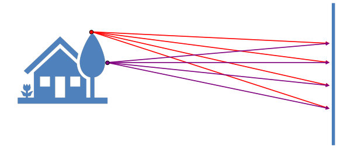
因此我们最先想到的就是小孔成像(Pinhole camera)，尽可能使得一一对应关系成立。
aperture(孔径)越小，成像越清晰
但此时出现一个问题，并不是孔越小图像就越清楚：
- 由物理学可以得到，当孔太小时，会产生光的衍射现象（diffraction effect）
- 孔太小也会导致通光量不足
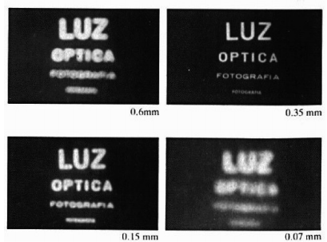
一个比较好的解决方法是使用镜头——Lens(保持一一对应的同时汇聚更多的光)
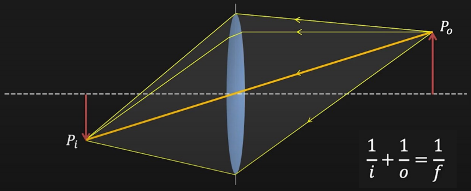
If \(o=\infty\), then \(f=i\)
Image Magnification#
放大率 \(m=\frac{h_i}{h_o}=\frac{i}{o}\),
由公式\(\frac{1}{i}=\frac{1}{o}+\frac{1}{f}\) 可得，当物体离透镜足够远时，像距可以近似等于焦距，因此可以说焦距也决定了图像放大率。
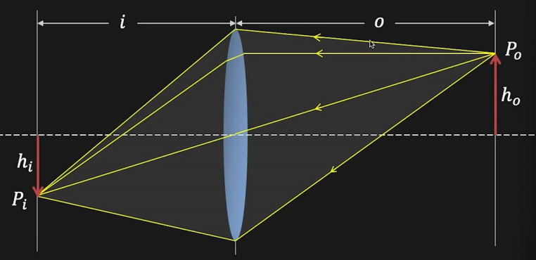
Field of View(FOV)#

视场角取决于两个因素：焦距与底片(sensor)的大小，由上图可以直观看出
从成像质量来看，底片越大越好（每个像素收到的光更多，信噪比更好），因此现在的工业目标就是在缩小底片的同时维持好的信噪比。
Aperture#
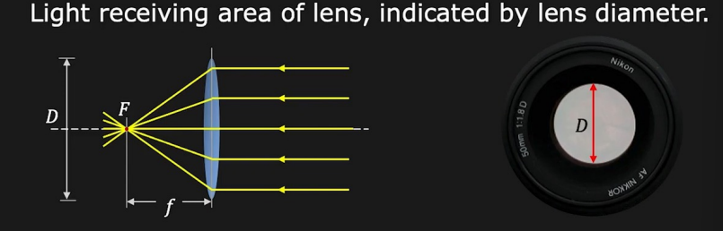

我们可以通过放大/缩小光圈来控制图像的亮度
F-number#
-
More convenient to represent aperture as a fraction of focal length: \(D=\frac{f}{N}\)
-
F-Number: \(N=\frac{f}{D}\)
Lens Defocus#

当 \(f\) 和 \(i\) 固定时，只有一个面(深度)在成像平面上是清楚的，所以我们需要对焦
（弥散圆）Blur circle diameter: \(b=\frac{D}{i^{'}}\vert i^{'}-i\vert\)， 下图是生活中常见的一个例子

Depth of Field(DoF)#
虽然有了弥散圆与defocus的概念，但是我们可能会疑惑生活中的照片并非仅有一个深度才是清晰的，这是因为图像并非连续的，而是由一个个方格（像素）构成的，当弥散圆落在一个像素内时，它表现出来也是清晰的，这就引入了景深的概念：
Range of object distances over which the image is sufficiently well focused, i.e. range over which blur b is less than pixel size.
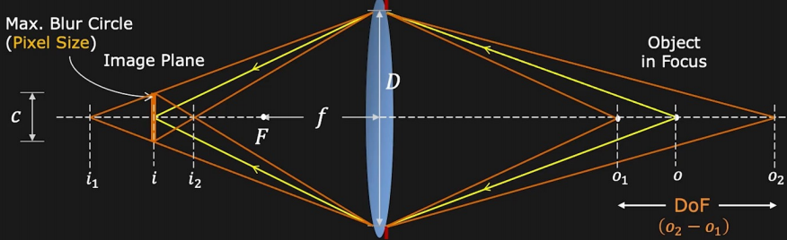
DoF: \(o_2-o_1=\frac{2pf^2cN(o-f)}{f^4-c^2N^2(o-f)^2}\)
Geometric image formation#
Geometric image formation 就是使用相机模型来描述3D世界和2D图像之间的几何关系。
Perspective Projection#
使用Pin-hole camera model描述的投影称为透视投影。
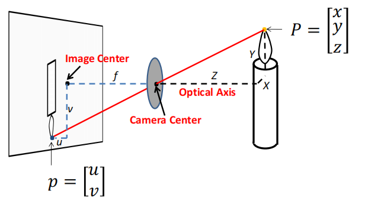
齐次坐标的引入(Homogeneous coordinates)#
Note
之前学习了多次齐次坐标的表示，这里不详细展开。只需注意引入齐次坐标是因为我们想要将投影表示为线性变换（即能够使用矩阵表示）。
深入了解齐次坐标：GAMES101 Lec3 https://www.bilibili.com/video/BV1X7411F744?p=3&vd_source=49519b2e89bff31aec426f55ae7d4afa
使用齐次坐标表示的投影矩阵：
\(\begin{bmatrix} f&0&0&0 \\ 0&f&0&0 \\ 0&0&1&0 \end{bmatrix} \begin{bmatrix}x\\ y\\ z\\ 1\end{bmatrix}=\begin{bmatrix}fx\\ fy\\ z\end{bmatrix}=\begin{bmatrix}f\frac{x}{z}\\ f\frac{y}{z} \\ 1\end{bmatrix}\)
Visualize Perspective Projection

Projection can be tricky#
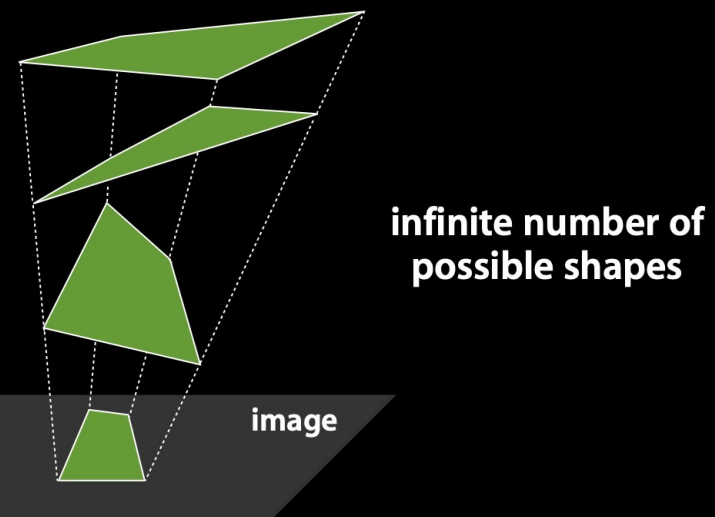
In perspective projection, straight lines are still straight, however, lenghth and angles are lost.
Vanishing points#

- Any two parallel lines have the same vanishing point \(v\)
- The ray from C through \(v\) is parallel to the lines
- \(v\) tells us the direction of the lines
- \(v\) may be outside the image frame or at infinity
Vanishing lines#

The union of all of these vanishing points is the vanishing line
地平线
Perspective distortion#
- The exterior columns appear bigger(but why?)
- The distortion is not due to lens flaws.
Radial distortion#
- Caused by imperfect lenses
- More noticeable for rays that pass through the edge of the lens.
- (two common categories)Pin cushion and Barrel
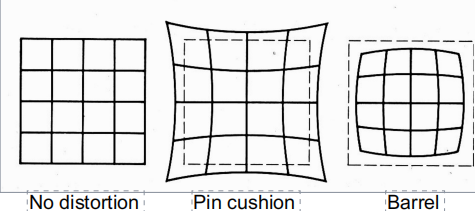
Orthographic projectioin#
\(\begin{bmatrix} 1&0&0&0 \\ 0&1&0&0\\ 0&0&0&1\end{bmatrix}\begin{bmatrix}x\\y\\z\\1\end{bmatrix}=\begin{bmatrix}x\\y\\1\end{bmatrix}\)

Photometric image formation#
- Describe the relation between the physical properies of 3D world and the color of 2d image.
Shutter speed#
- control exposure time
- The pixel value is equal to the integral of the light intensity within the exposure time
Rolling shutter effect#
Color spaces#
- RGB
- HSV wiki
人眼对三种颜色RGB的敏感程度是不一样的，在单色中，人眼对红色最不敏感，蓝色最敏感，所以RGB颜色空间均匀性较差。
因此在图像处理中我们还使用了HSV颜色空间，比RGB更接近人们对彩色的感知。
- Hue(色调，色相) 表示色彩信息
- Saturation(饱和度、色彩纯净度) 饱和度越高，颜色越深。饱和度0代表纯白色。
- Value(明度) 颜色的敏感程度，明度为0表示纯黑色
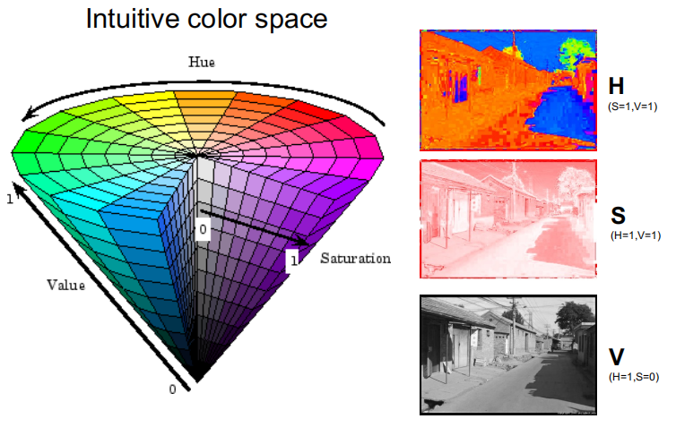
Bayre filter#
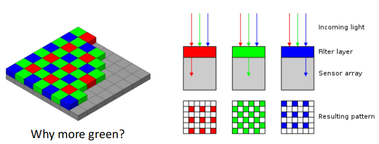
对于彩色图像，需要采集多种基本的颜色，最简单的方法是用滤镜的方法，红色滤镜透过红色波长的光etc. 如果要采集RGB三种颜色，则需要三种滤镜，价格昂贵。而拜尔滤镜(Bayre Filter)在一块滤镜上设置不同颜色，由于人眼对绿色比较敏感，因此绿色较多，如上图所示。
Model the light reflected by an object : Shading#
- Compute light reflected toward camera at a specific point
- Inputs:viewer direction, surface normal, light direction, surface parameters
The light received per unit area is proportional to \(cos\theta = l\cdot n\)
Material=BRDF(Bidirectional reflectance distribution function)#
BRDF: \(f_r(v_i;v_r;n;\lambda)\) $$ L_r(v_r;\lambda)=\int L_i(v_i;\lambda)f_r(v_i;v_r;n;\lambda)cos^{+}\theta_idv_i $$
Created: 2024年8月11日 11:55:40